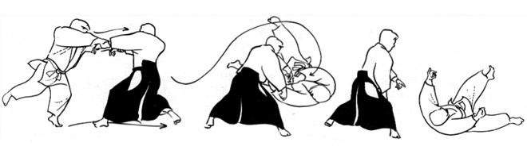
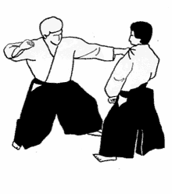
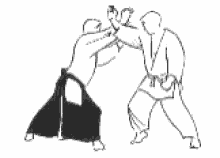

Чтобы воплотить в жизнь такую необычную для единоборства философию, необходима особая техника. В её основе лежит встраивание в атаку и использование энергии атакующего против него самого. Если в других единоборствах, например, карате, приём удара делится на его прерывание (блок) и собственную атаку, в айкидо атакующему позволяется продолжать движение, однако его импульс перенаправляется в нужном направлении. Мастер айкидо может повалить бьющего его противника на землю, просто уйдя с линии атаки и выставив руку на пути его движущейся по инерции головы.
Яркий пример такой техники представлен на рисунке ниже. Нападавший (укэ) хватает защищающегося (тори) за обе руки с намерением обездвижить или бросить через себя. Однако несколько лёгких движений тори (незначительный подъём рук и отшаг в сторону) выводят укэ из равновесия, и он оказывается опрокинут собственной инерцией.
Не последнее место в айкидо занимает также знание особых точек, как болевых, так и отвечающих за различные движения и удержание равновесия.
Правильный ответ: потянув сзади. "Точку неравновесия" можно получить, если мысленно построить на земле равносторонний треугольник, две вершины которого лежат на пятках стоящего человека, а третья находится у него за спиной. Если прикладывать усилие так, чтобы оно было направлено в эту точку, человек не сможет найти недостающую точку опоры и упадёт. Здесь нет никакой изотерики, только чистая физика и бионика. Действительно, толкнуть человека в бок не получится, так как ноги не сгибаются в этом направлении, а мышцы бёдер очень сильны. Наклон вперёд человек также выдерживает очень хорошо, потому что на протяжении всей своей эволюции почти постоянно находился на полусогнутых ногах и был наклонён вперёд; сохранять баланс в этом направлении помогают ступни. И только падению на спину ничего не мешает.
Однако кроме простого перенаправления соперника в айкидо существуют также и броски
И болевые удержания
